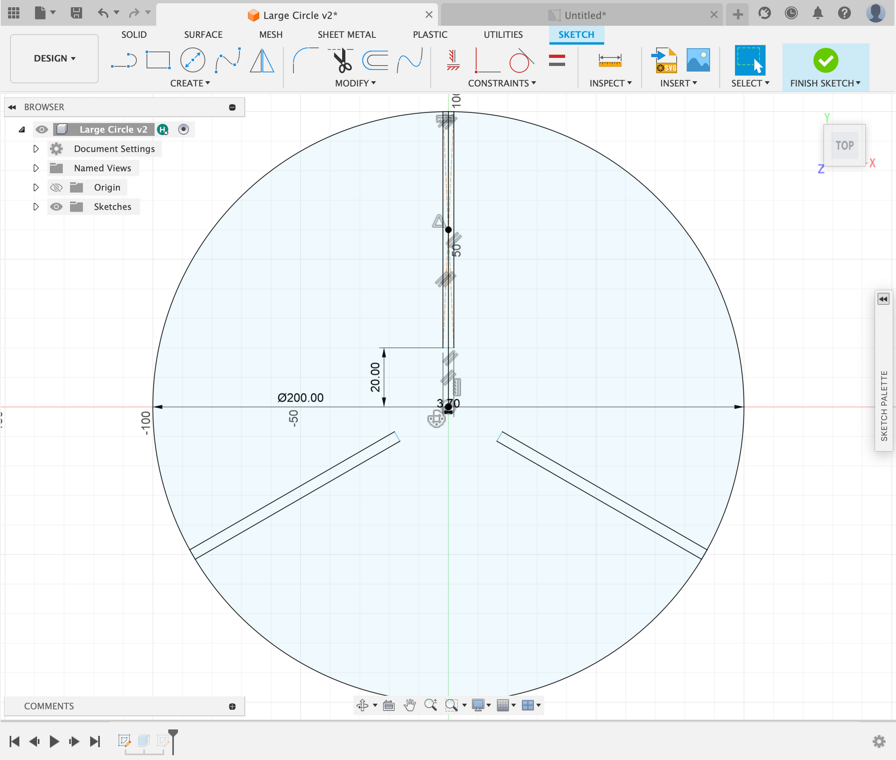

Press-Fit Project

This week I created a press-fit sphere. The goal of this project was to be able to construct a three-dimensional model from numerous laser-cut pieces. The parts of the model would press-fit together, meaning they would not require any adhesive and would instead be held together by friction alone.
Overview:
Design:
I began by designing the sphere's spine, settling on a radius of 100mm. As the laser-cutter burns material, I designed the slot to be narrower than the actual width of the material so that the pieces would fit together. The material's width is 3.8mm, while the slot's width is 3.7mm. This would mean my kerf is 0.1mm I selected 20mm as the length of the slot because it worked well with the other body components.
Next, I designed the uppermost, smallest circle. Based on the position of the top slot on the spine, the top circle's radius must be 47.22mm. As previously indicated, even though the material has a width of 3.8mm, the slot width would be greater than 3.7mm because the laser-cutter burns material. The length of the slot was then determined by subtracting the radius of the circle from the length of the slot on the spine. The result of subtracting 20mm from 47.22mm is 27.22mm, and I added tolerance to get the final value of 27.19mm.
For the middle circle, I used the same method. The radius is 90mm based on the positioning of the second slot on the spine. The slot's witch would be 3.7mm. The light of the slot would be 70mm, which is 90mm minus 20mm. The model would have three spines so all of the slots would be 120 degrees apart.
For the widest circle, I utilized the same technique. Based on the location of the middle slot on the spine, the radius of the circle is 100mm. The width of the slot would be 3.7mm. The length of the slot is 80mm, which is 100mm minus 20mm.

Assembly:
Next, I laser-cut all of the peices, I used 3 spine peices, 2 small bodies, 2 medium bodies, and 1 large body
After slotting all of the peices together, I ended with the final product shown above.